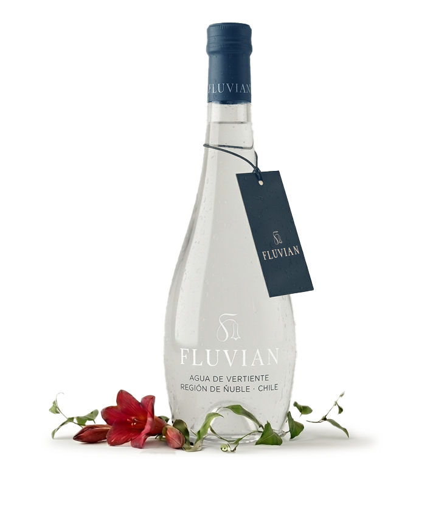

Donde dos bosques se encuentran
Conocer el origenEn la comuna de Yungay, Región de Ñuble, el Complejo Volcánico Nevados de Chillán y la Laguna del Laja forman uno de los corredores biológicos más extraordinarios del país: la zona de transición entre el bosque esclerófilo del norte y la exuberante selva valdiviana del sur.
Allí, en el corazón verde de ese territorio, el agua de la lluvia y los deshielos comienza un viaje silencioso bajo la tierra: se filtra gota a gota a través de rocas, suelos volcánicos y raíces de bosques nativos, en un proceso que toma años de paciencia y equilibrio. Cuando esa agua vuelve a la superficie, emerge como una vertiente de extraordinaria pureza. Esa vertiente es Fluvian.

Lluvia y deshielos
El agua desciende desde las cumbres nevadas de los Andes y las lluvias del sur de Chile.
Filtración volcánica
Gota a gota, el agua se filtra a través de rocas y suelos volcánicos, ganando pureza y minerales.
Raíces del bosque nativo
El agua atraviesa las raíces de los bosques nativos del sur, un ecosistema que actúa como filtro natural.
El río subterráneo
Por años, el agua recorre la tierra en silencio, buscando su camino entre los dos bosques.
La vertiente emerge
Extraordinaria pureza. El agua vuelve a la superficie, lista para ser embotellada en su lugar de nacimiento.
Es agua con historia,
con territorio, con tiempo.
"Un territorio que conserva una de las riquezas más valiosas de la naturaleza: agua pura embotellada en su origen."
Yungay es el lugar donde el bosque esclerófilo del norte y la selva valdiviana del sur se encuentran. Un corredor biológico único, protegido por bosques nativos y suelos volcánicos que hacen posible esta agua.
En un mundo que valora cada vez más lo natural, lo auténtico y lo trazable, Fluvian representa algo más profundo. Y por eso no solo embotella: cuida activamente el ecosistema que la hace posible.
Yungay · Región de Ñuble
Sur de Chile · 37°S
Vertiente natural
Filtración por suelos volcánicos y bosque nativo
En su lugar de nacimiento
Pureza preservada desde la vertiente
Reserva privada · 30 hectáreas
Conservación activa del bosque nativo. Sin tala. Sin plantaciones forestales. Porque sin bosque no hay vertiente.
Del latín
río · corriente · agua en movimiento
Un nombre que es, en sí mismo, el viaje que el agua recorre antes de llegar a ti. Antes de ser marca, esta agua ya era movimiento: un río subterráneo que recorrió la tierra durante años, encontrando su camino entre dos bosques.
Cada botella lleva consigo una historia simple y poderosa. La historia de un agua que nace lentamente bajo la tierra, entre bosques y montañas.